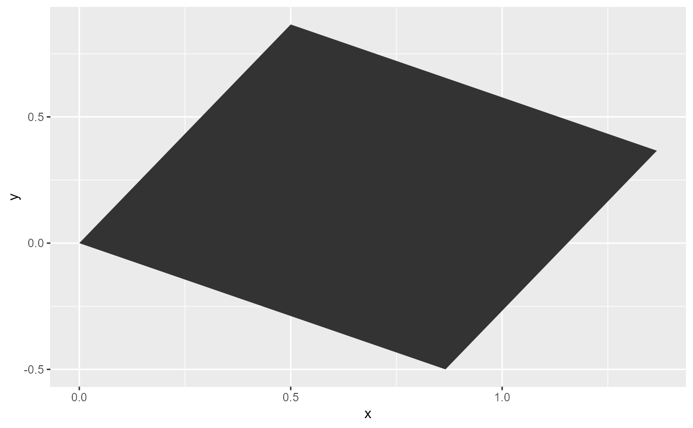
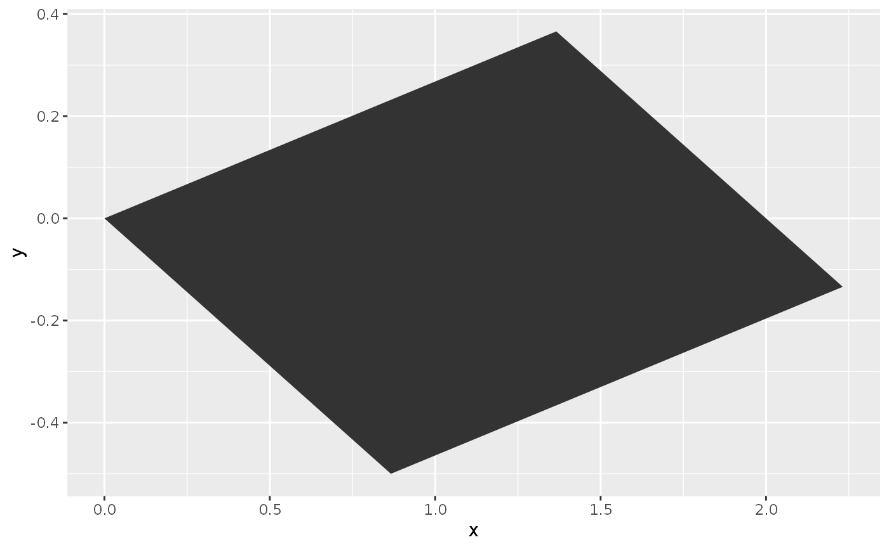
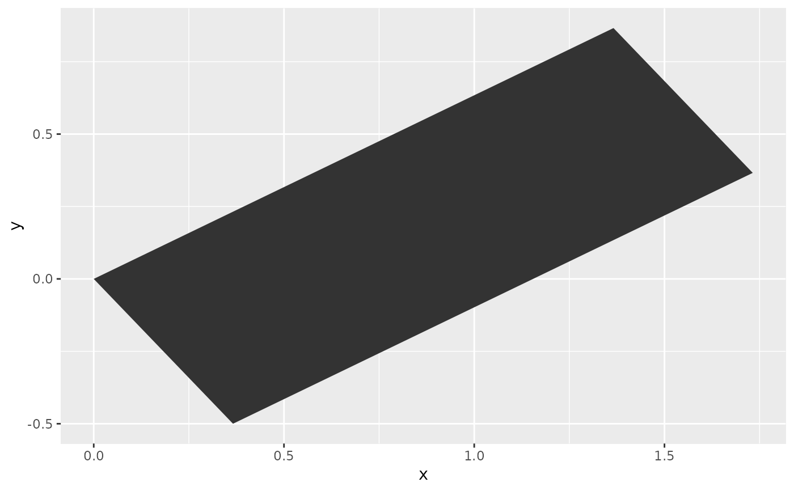

Transforms coordinates in two dimensions in a linear manner for layers that
have an x and y parametrisation.
position_lineartrans(scale = c(1, 1), shear = c(0, 0), angle = 0, M = NULL)
| scale | A |
|---|---|
| shear | A |
| angle | A |
| M | A |
A PositionLinearTrans ggproto object.
Linear transformation matrices are 2 x 2 real
matrices. The 'scale', 'shear' and 'rotation'
arguments are convenience arguments to construct a transformation matrix.
These operations occur in the order: scaling - shearing - rotating. To
apply the transformations in another order, build a custom 'M'
argument.
For some common transformations, you can find appropriate matrices for the
'M' argument below.
An
identity transformation, or returning the original coordinates, can be
performed by using the following transformation matrix: | 1 0
|| 0 1 |
or M <- matrix(c(1, 0, 0, 1), 2)
A scaling transformation multiplies the dimension of
an object by some amount. An example transformation matrix for scaling
everything by a factor 2: | 2 0 || 0 2 |
or
M <- matrix(c(2, 0, 0, 2), 2)
Similar
to scaling, squeezing multiplies the dimensions by some amount that is
unequal for the x and y coordinates. For example, squeezing
y by half and expanding x by two:
| | | 2 | 0 | | | |||
| | | 0 | 0.5 | | |
or
M <- matrix(c(2, 0, 0,
0.5), 2)
Mirroring the coordinates around one of the axes. Reflecting around the x-axis:
| | | 1 | 0 | | | |||
| | | 0 | -1 | | |
or
M <- matrix(c(1, 0, 0, -1), 2)
Reflecting around the y-axis:
| | | -1 | 0 | | | |||
| | | 0 | 1 | | |
or
M <- matrix(c(-1, 0, 0, 1), 2)
For projecting the coordinates on one of the axes,
while collapsing everything from the other axis. Projecting onto the
y-axis:
| | | 0 | 0 | | | |||
| | | 0 | 1 | | |
or
M <- matrix(c(0, 0, 0, 1), 2)
Projecting onto the
x-axis:
| | | 1 | 0 | | | |||
| | | 0 | 0 | | |
or
M <- matrix(c(1, 0, 0, 0), 2)
Tilting the coordinates horizontally or vertically. Shearing vertically by 10%:
| | | 1 | 0 | | | |||
| | | 0.1 | 1 | | |
or
M <-
matrix(c(1, 0.1, 0, 1), 2)
Shearing horizontally by 200%:
| | | 1 | 2 | | | |||
| | | 0 | 1 | | |
or
M <-
matrix(c(1, 0, 2, 1), 2)
A rotation performs a motion around a fixed point, typically the origin the coordinate system. To rotate the coordinates by 90 degrees counterclockwise:
| | | 0 | -1 | | | |||
| | | 1 | 0 | | |
or
M <- matrix(c(0, 1, -1,
0), 2)
For a rotation around any angle \(\theta\) :
| | | \(cos\theta\) | \(-sin\theta\) | | | |||
| | | \(sin\theta\) | \(cos\theta\) | | |
or
M <- matrix(c(cos(theta), sin(theta), -sin(theta),
cos(theta)), 2)
with 'theta' defined in radians.
df <- data.frame(x = c(0, 1, 1, 0), y = c(0, 0, 1, 1)) ggplot(df, aes(x, y)) + geom_polygon(position = position_lineartrans(angle = 30))# Custom transformation matrices # Rotation theta <- -30 * pi / 180 rot <- matrix(c(cos(theta), sin(theta), -sin(theta), cos(theta)), 2) # Shear shear <- matrix(c(1, 0, 1, 1), 2) # Shear and then rotate M <- rot %*% shear ggplot(df, aes(x, y)) + geom_polygon(position = position_lineartrans(M = M))# Alternative shear and then rotate ggplot(df, aes(x, y)) + geom_polygon(position = position_lineartrans(shear = c(0, 1), angle = 30))# Rotate and then shear M <- shear %*% rot ggplot(df, aes(x, y)) + geom_polygon(position = position_lineartrans(M = M))